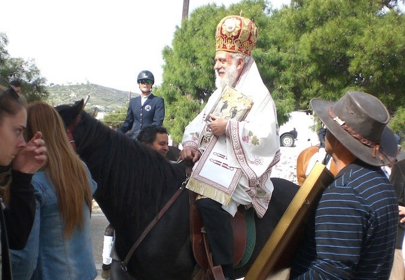
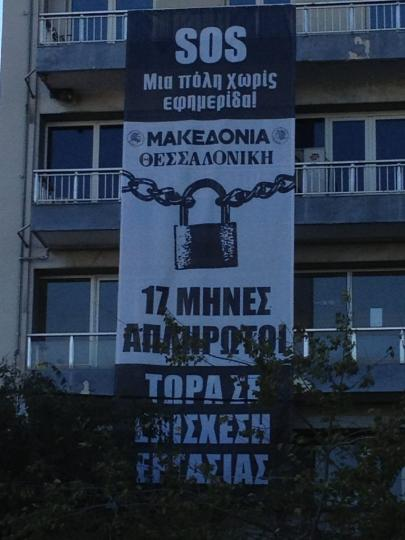

Στα ίχνη των διαδοχικών τιτλούχων του ιστορικού εκδοτικού συγκροτήματος της "Μακεδονίας" και της "Θεσσαλονίκης" οδηγεί με τον έναν ή τον άλλο τρόπο η ειδησεογραφία των ημερών για τις offshore εταιρείες, την Proton Bank, τις καταδίκες για μίζες στα εξοπλιστικά αλλά και τις ιερές μπίζνες στην Τήνο.
Ξεκινώντας από το τέλος, ο μητροπολίτης Σύρου Δωρόθεος ο β' που στις τηλεφωνικές συνομιλίες των ποινικών φίλων του γραμματέα της ΝΔ Λευτέρη Αυγενάκη αναφέρεται ως ο "παπάς ο μεγάλος που θέλει συνέχεια μίζες" (εφημερίδα Documento, 5.11.17) ήταν από τη δεκεαετία του '80 ο "μέντορας" της Κατερίνας Βελλίδου, της κληρονόμου της πάλαι ποτέ εκδοτικής αυτοκρατορίας της "Μακεδονίας".
Τώρα, ο "παπάς ο μεγάλος" εμπλέκεται στην υπόθεση μεταφοράς χρυσού από τα τάματα της Τήνου σε χυτήρια της Τουρκίας και σύμφωνα με τις καταγραφές του υπερ κοριού της ΕΥΠ, οι ποινικοί συνεργάτες του δηλώνουν ότι μπροστά του αισθάνονται "άγιοι".

Ο μητροπολίτης Σύρου Δωρόθεος καβάλα στο άλογο. Αυτά που λένε γι αυτόν στις τηλεφωνικές τους συνομιλίες οι συνεταίροι του κολάζουν και άγιο!
Τότε, ο αρχιμανδρίτης Δωρόθεος είχε αναπτύξει στενές, "θρησκευτικού τύπου" σχέσεις με την Κατερίνα Βελλίδου, η οποία τελικά το έσκασε από τη Θεσσαλονίκη κι έκτοτε κυκλοφορεί ελεύθερη αφού πρώτα κατάφερε να ξεκοκαλίσει την οικογενειακή περιουσία και, τελικά, το 1996 να τινάξει στον αέρα το εκδοτικό συγκρότημα αφήνοντας πίσω της συντρίμμια και χρέη.
Κάτι ανάλογο, με διαφορετικούς πρωταγωνιστές, συμβαίνει και σήμερα στο εκδοτικό συγκρότημα, στο οποίο οι σχεδόν 70 εργαζόμενοι που έχουν απομείνει κάνουν επίσχεση εργασίας από τις αρχές Οκτωβρίου.

Το περίφημο πανό της επίσχεσης. Για την αγορά της τεράστιας λινάτσας η ΕΣΗΕΜΘ πλήρωσε 800 ευρώ. Λίγες μέρες μετά την ανάρτησή του, κατέβηκε... μυστηριωδώς από την πρόσοψη του κτιρίου της "Μακεδονίας".
Η επιχείρηση, που τη διαχειρίζεται η δικηγόρος Β. Σουλοπούλου (στη κεντρική φωτογραφία αριστερά, δίπλα στον μεγαλομέτοχο Γιάννη Ρήγα), τούς άφησε απλήρωτους επί 15 μήνες, οφείλει άλλους τρεις μισθούς από το 2011 και ξεκαθαρίζει ότι δεν υπάρχει περίπτωση να δώσει αποζημιώσεις στην πολύ πιθανή περίπτωση που οδηγηθεί στην πτώχευση. Το 2013, η Μακεδονία πήρε κρατική επιδότηση 10 εκατ. ευρώ για να καλύψει ισόποσα χρέη σε εργαζόμενους, ασφαλιστικά ταμεία και δημόσιο και σήμερα όχι μόνο δεν έχει εξοφλήσει τα χρέη της άλλα έφτασε να χρωστάει 15 εκατ. ευρώ, εκ των οποίων σχεδόν 1,5 εκατ. στους εργαζόμενους. Τώρα, το νομικό γραφείο της κ. Σουλοπούλου προωθεί τη λύση της σύστασης κοινωνικού συνεταιρισμού, με τη διευθυντική ομάδα που έστειλε υπό τις οδηγίες της το καράβι στα βράχια, να έχει πρωταγωνιστικό ρόλο. Για τη συμμετοχή στον συνεταιρισμό ζητείται από τους εργαζόμενους να εκχωρήσουν μέρος από τις οφειλές τους, προκειμένου να ενοικιάσουν τον τίτλο από τον μεγαλομέτοχο... Πρόκειται για ένα ακόμα "σχέδιο σωτηρίας", στο οποίο όμως, μετά το αρχικό μούδιασμα αντιδρούν τα 2/3 των εργαζομένων.
Ο κατά τα άλλα "άφαντος" εκδότης Γιάννης Ρήγας, μαζί με τον αδερφό του Θόδωρο εμφανίζονται ως εμπλεκόμενοι σε ένα πολυδαίδαλο σύστημα δανειοδότησης offshore εταιρειών με έδρα τα νησιά Κέιμαν από την αλήστου μνήμης Proton Bank (εφημερίδα Έθνος, 7.11.17).
Στις αρχές του 2011 η Proton Bank του Λαυρέντη Λαυρεντιάδη δανειοδοτεί με περίπου 80 εκατ. ευρώ τέσσερα funds, το νήμα της διαχείρισης των οποίων φέρεται σύμφωνα με το πόρισμα των ελεγκτών της Τράπεζας της Ελλάδας να οδηγεί στη Sciens των αδερφών Ρήγα, ενώ μια άλλη offshore με έδρα τα Κέιμαν , η Boukoleon, που φέρεται επίσης να συνδέεται με τους εκδότες της "Μακεδονίας", πήρε αμοιβή για "μεσιτεία" 2,5 εκατ. ευρώ.
Ήταν τότε, στις αρχές του 2011 που εξαπολύθηκε μια άνευ προηγουμένου επίθεση στους εργαζόμενους της εφημερίδας, με σχέδια εκ περιτροπής εργασίας, απολύσεις και ατομικά συμφωνητικά με περικοπές 30% που τα προωθούσε η διαχειρίστρια του συγκροτήματος Β. Σουλοπούλου. Έκτοτε, και μέχρι το σημερινό επώδυνο για τους εργαζόμενους τέλος, είχε στηθεί ένα σκηνικό αλλεπάλληλων καθυστερήσεων πληρωμών, διχαστικής πολιτικής, τρομοκρατίας και εκβιασμών "ή υπογράφεις ή απολύεσαι".
Το 2015, κι ενώ το εκδοτικό συγκρότημα είχε αρχίσει να καταρρέει με γρήγορους ρυθμούς κάνει ένα φαινομενικά ανεξήγητο και σύντομο πέρασμα από τη διοίκηση της εφημερίδας ο πρώην αντιδήμαρχος του δήμου Θεσσαλονίκης Χασδάι Καπόν (φωτογραφία επάνω). Ο τελευταίος είχε αναγκαστεί να παραιτηθεί από αντιδήμαρχος όταν βγήκε το βούλευμα για την υπόθεση της Proton Bank, της οποίας ήταν μέλος του δ.σ., και τον παραπέμπει να δικαστεί για το κακούργημα της απιστίας στο δημόσιο.
Αλλά και ο καταδικασμένος για άλλη υπόθεση, τις μίζες για τα εξοπλιστικά προγράμματα επί θητείας Άκη Τζοχατζόπουλου, ο Γιώργος Σαχπατζίδης (στη φωτογραφία με αστυνομική συνοδεία και χειροπέδες) είχε περάσει στις αρχές του 2000 από τη διοίκηση του εκδοτικού συγκροτήματος. Στην πρώτη του ομιλία ενώπιον των εργαζομένων της "Μακεδονίας", ο Γιώργος Σαχπατζίδης που σήμερα βρίσκεται στη φυλακή, είχε εκστομίσει την περίφημα ατάκα "σαν πολλούς σας βλέπω" κι έβαλε αμέσως μπροστά πρόγραμμα απολύσεων επτά εργαζομένων ανά μήνα, ένα πρόγραμμα που έμοιαζε πολύ με το τηλεοπτικό φρούτο της εποχής "big brother". Ήταν η πρώτη μεγάλη επίθεση που είχαν δεχτεί οι εργαζόμενοι, η αγριότητα της οποίας τους οδήγησε να συγκροτήσουν τo συνδικαλιστικό δίκτυο αλληλεγγύης από τα κάτω, την "αυτόνομη κίνηση δημοσιογράφων", και, τελικά, να την αποκρούσουν.